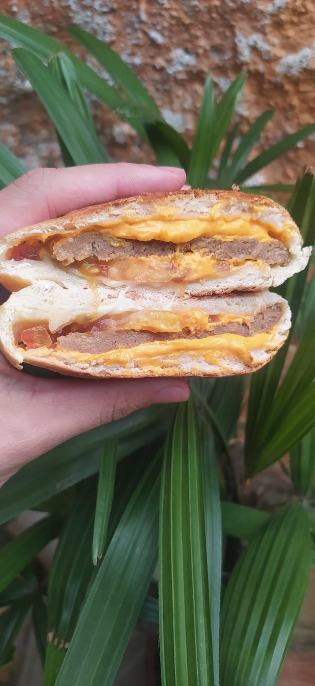
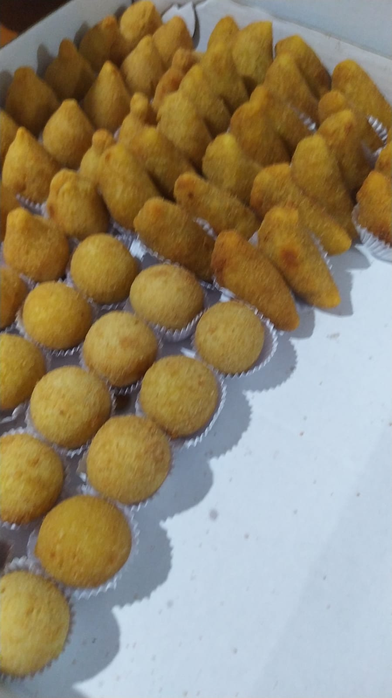
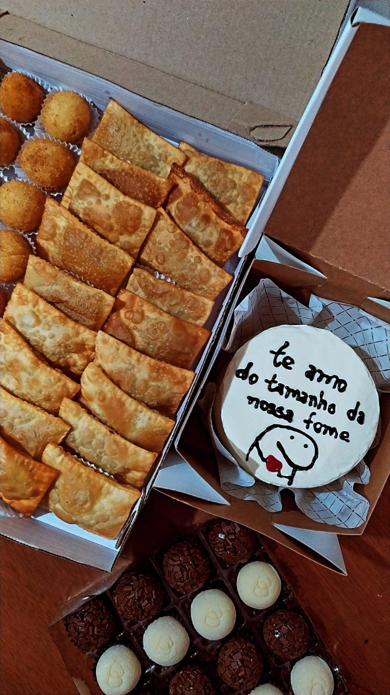
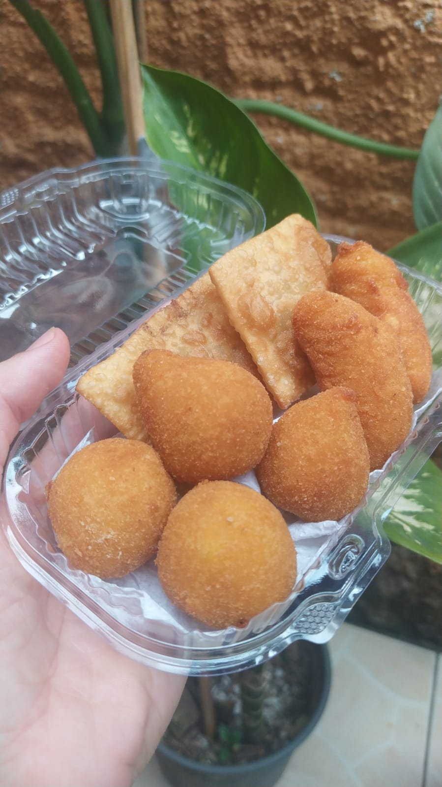
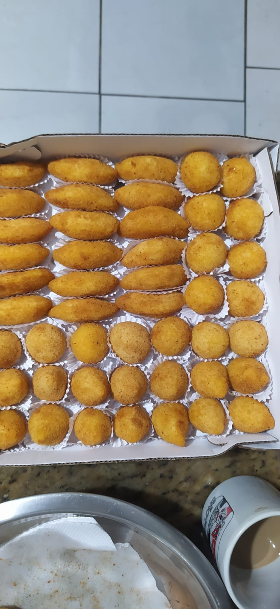

Salgados
Assados Recheados
Os assados recheados são uma escolha saborosa e saudável para qualquer refeição.
Eles podem são feitos com uma massa de pão, recheado diferentes tipos de carne, incluindo boi, porco, frango, e misturado com uma variedade de ingredientes, como queijo, legumes, frutas ou especiarias
Salgados de festa
Salgados são um item essencial em qualquer festa ou evento. Eles são fáceis de comer e oferecem uma variedade de opções para atender aos diferentes gostos e preferencias. Desde salgadinhos clássicos, como coxinhas e risólis, até opções mais elaboradas, como quiches e tortas salgadas, os salgados são uma forma conveniente e saborosa de alimentar convidados.
Galeria

Salgado Hamburgão

Salgados de Festa

Kit Mini Festa

Kit de Festa "Só meu!"

Cento de Salgados Fritos